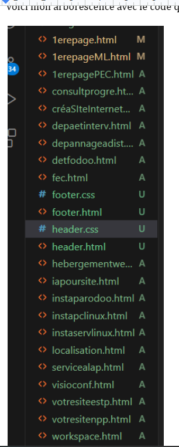
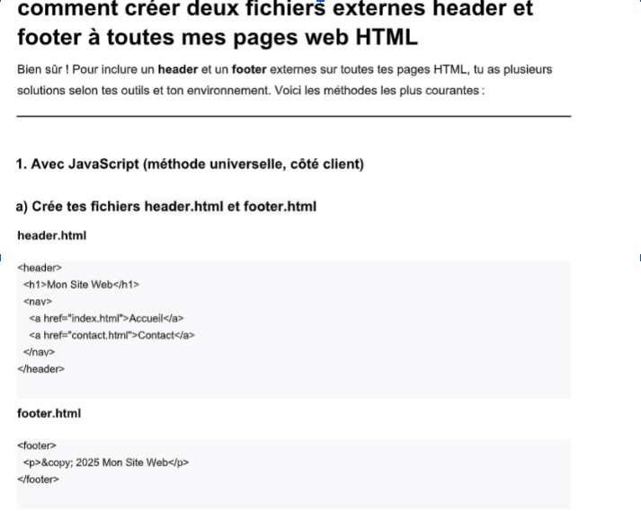
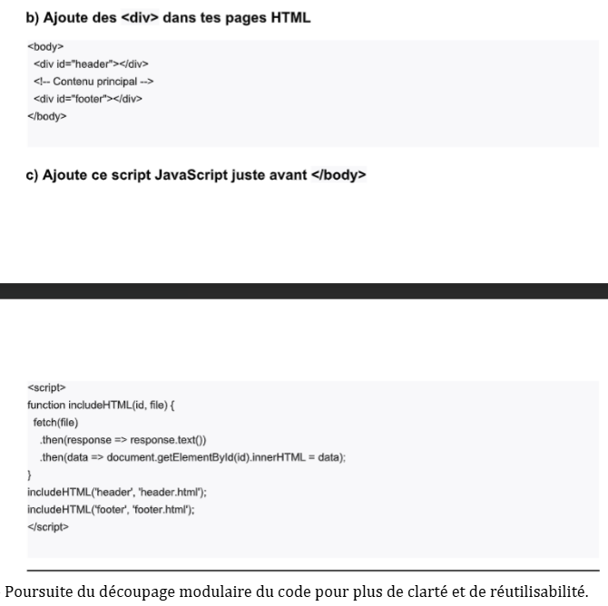
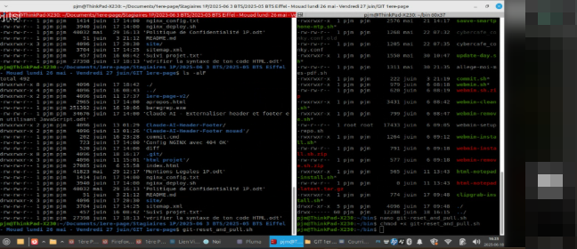
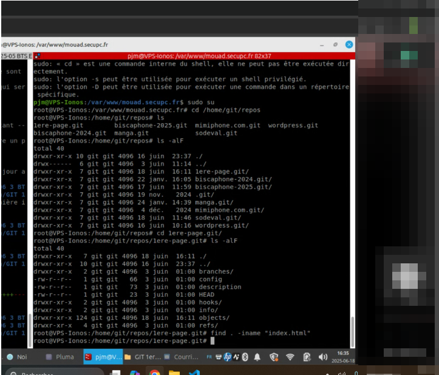

HITOP - Travailler en mode projet
Stage 1ère annéePendant mon stage chez HITOP, j'ai travaillé sur différents projets web en collaboration avec mon tuteur de stage.
J'ai dû :
- respecter les demandes du client,
- suivre les différentes étapes de développement,
- organiser mes tâches quotidiennes,
- réaliser des points réguliers en visioconférence,
- et rendre compte de l'avancement des travaux effectués.
J'ai également utilisé des outils de développement et de gestion de versions afin de travailler de manière organisée et structurée sur les différents projets web. Les semaines 3 et 4 ont surtout porté sur les corrections demandées, les points quotidiens en visio, le découpage du code et la découverte de la mise en ligne.
Cette expérience m'a permis de développer des compétences en organisation de projet, en communication professionnelle et en travail collaboratif.








Compétences mobilisées
Organisation projetCommunication clientSuivi des demandesGitVisioconférence